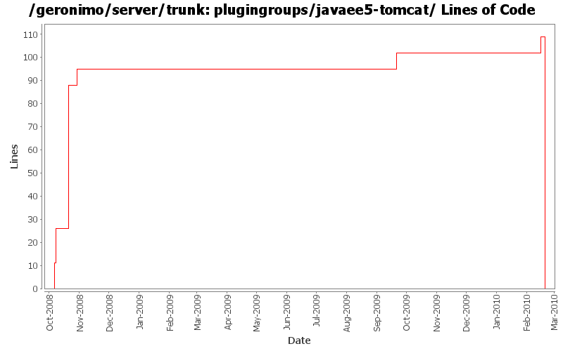

[root]/plugingroups/javaee5-tomcat
 src
(0 files, 0 lines)
src
(0 files, 0 lines)
 main
(0 files, 0 lines)
main
(0 files, 0 lines)
 history
(0 files, 0 lines)
history
(0 files, 0 lines)

| Author | Changes | Lines of Code | Lines per Change |
|---|---|---|---|
| Totals | 15 (100.0%) | 260 (100.0%) | 17.3 |
| linsun | 5 (33.3%) | 115 (44.2%) | 23.0 |
| djencks | 5 (33.3%) | 108 (41.5%) | 21.6 |
| dwoods | 3 (20.0%) | 22 (8.5%) | 7.3 |
| genspring | 1 (6.7%) | 8 (3.1%) | 8.0 |
| manugeorge | 1 (6.7%) | 7 (2.7%) | 7.0 |
add RFC66 WAB plugingroups based on test servers under plugins/wab. Also rename tomcat plugin from javaee5 to javaee6.
0 lines of code changed in 1 file:
add welcome app, console and plugin portlet back into the javaee assemblies; also update the plugin-repos to 3.0
20 lines of code changed in 1 file:
build plugin groups, but trim them to what is available
102 lines of code changed in 1 file:
GERONIMO-4883 ship agent-car-jmx and make it default agent, mark ejb agent as "load=false".
8 lines of code changed in 1 file:
GERONIMO-4655 upgrade version to 3.0-SNAPSHOT, make a few things more consistent
1 lines of code changed in 1 file:
GERONIMO-4538 Move boilerplate to configs, make groupIds more sensible
1 lines of code changed in 1 file:
GERONIMO-4337 rename AMQ5 modules to old names that apps expect
2 lines of code changed in 1 file:
GERONIMO-4337 upgrade to activemq 5.2. Reduced console functionality
2 lines of code changed in 1 file:
GERONIMO-4432 Allow users to filter plugins by category and name columns when selecting assembly list
1 lines of code changed in 1 file:
GERONIMO-4415 use jpa for data access in monitoring console
2 lines of code changed in 1 file:
Merging patch for GERONIMO-3811 EjbServer Portlet.
7 lines of code changed in 1 file:
GERONIMO-4371 remove unnecessary plugin groups
70 lines of code changed in 1 file:
GERONIMO-4363 Update plugin group's metadata (especially category) to represent function of a plugin group
14 lines of code changed in 1 file:
some modification to the javaee5 plugin groups and some format changes
19 lines of code changed in 1 file:
add javaee5 jetty and tomcat plugin groups (related to GERONIMO-4316)
11 lines of code changed in 1 file: